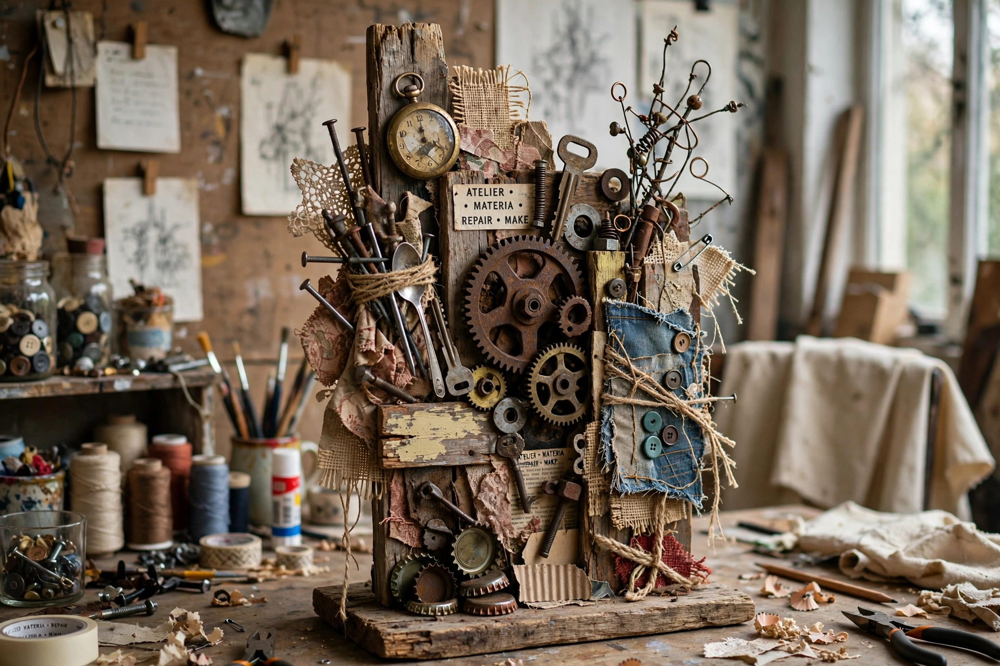

Bricolage (from French bricoler, to tinker) is the construction or creation of a work from a diverse range of things that happen to be available, or the work created thereby.

Claude Lévi-Strauss in The Savage Mind (1962) contrasted the bricoleur, who uses whatever is at hand, with the engineer who designs for purpose. The concept influenced cultural studies, postmodernism, and studies of myth.
In art, literature, psychology, education, and software, bricolage denotes improvised recombination, intertextuality, and DIY culture. See Claude Lévi-Strauss, Collage.